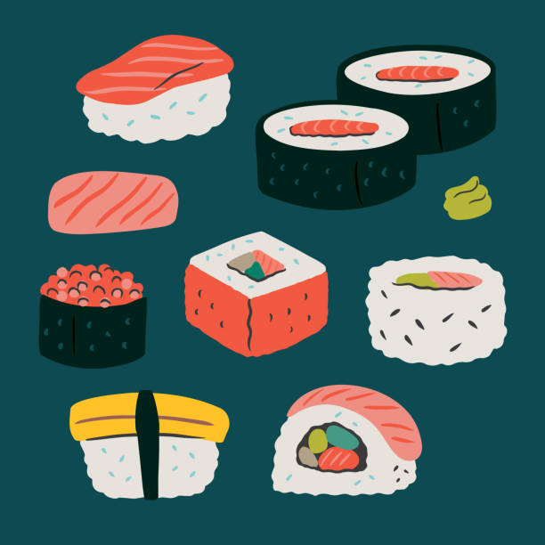

EBI-SUSHI
Ebi-Sushi catering og take-away
Meny
Åpningstid:
Mandag - Søndag
13:00 - 21:00
Telefon: 22 22 87 71

Her hos oss på Ebi-Sushi på Storo er gjestene i sentrum, og vi ønsker at våre gjester skal få en god matopplevelse! Vi serverer diverse foretter, thailandsk, kinesisk, vietnametisk, vegetar og sushi!
Grefsenveien 30 A 0485 Oslo
© Excursion